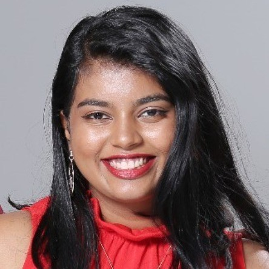

NOTES FROM THE JOURNEY
Beyond the code.
Reflections on learning, research, and finding my direction.
NOTES FROM THE JOURNEY
Reflections on learning, research, and finding my direction.

Jovita AndrewsAI · Data science · ResearchBiostatistician · NYU Abu Dhabi